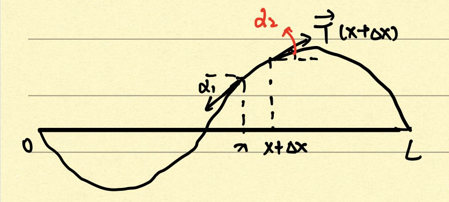

1 波动方程
1.1 弦振动方程
1.1.1 方程的导出、定解条件
1.1.1.1 弦振动方程
\(u(x,t)\)表示每点\(x\)在时刻\(t\)的位移。
其中我们需要做出以下假设以简化问题，因此我们做出如下假设，也叫理想假设(没有外力):
- 弦是均匀的，换言之则是线密度为常数，并且，直径//长度<<1,也就是说，直径比长度远小。这个保证弦可以看作是理想中的一条线。
- 弦在某一平面是做微小的横振动（运动方向与传播方向垂直）。这个保证了弦没有发生巨大形变。
- 弦是柔软的，并且张力方向与切线方向一致。也就是说满足胡克定律，张力的大小与形变大小成正比。
我们需要了解的知识点
- 牛顿第二定律：\(F=ma,Ft=mv\)
- 在\((x,x + \Delta x)\)上，弧长\(S = \int_{x}^{x+\Delta x} \sqrt{1+(\frac{\partial u}{\partial x})^2} dx \approx \int_{x}^{x+\Delta x} dx = \Delta x\)
 在如上的力学分析示图中我们可以设在\(x\)点处的张力\(\vec{T}(x)=\)，并且\(T(x)= \lvert\vec{T}(x) \lvert\)。
| 水平分力 | 竖直分力 | |
|---|---|---|
| \(x\) | \(-T(x)cos\alpha_1\) | \(-T(x)sin\alpha_1\) |
| \(x+\Delta x\) | \(T(x+\Delta x)cos\alpha_2\) | \(T(x+\Delta x)sin\alpha_2\) |